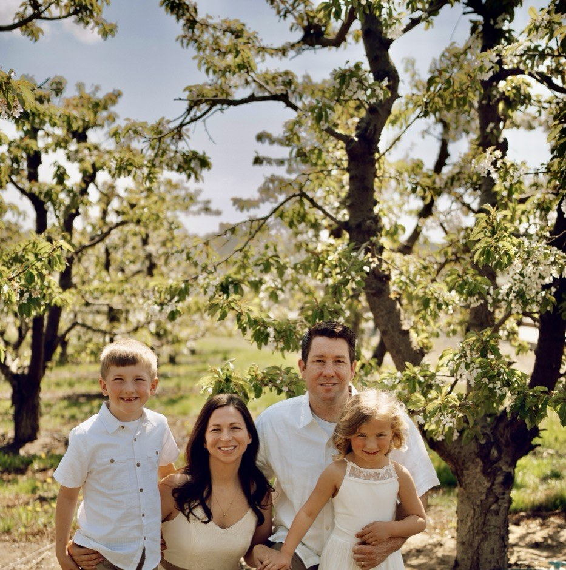
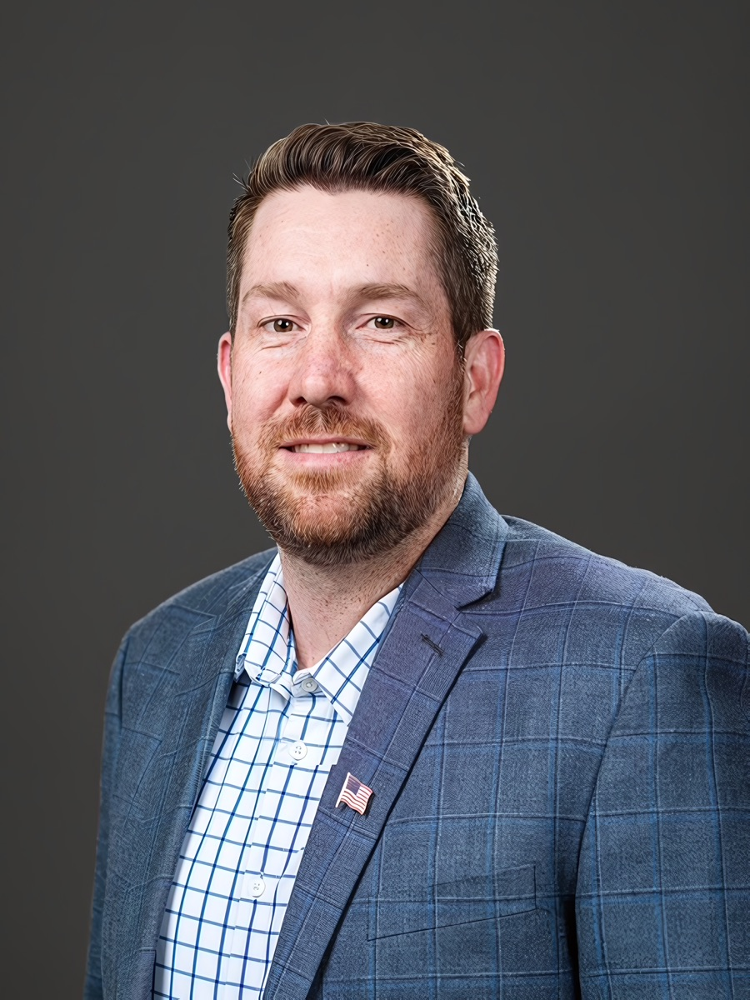

Yakima Hills
Yakima River
Valley Orchards
Yakima Hops
Yakima Hills
Yakima River
Valley Orchards
Yakima Hops
Yakima Valley Raised. Ready to Serve.

Parents are the primary stakeholders in their children's upbringing. The state does not raise our children — families do. Reedy believes parents have the right to know what their children are being taught, what medical decisions are being made, and what values are being promoted. Government has overstepped, and it is time to push back. Reedy will fight to restore and protect the fundamental right of parents to guide their children's lives without interference from Olympia.
The CCA has driven up the cost of everything: fuel, food, farming inputs. Washington was already the 5th cleanest state in America before this law passed. It's an unneeded regulation that punishes working families and Valley farmers without measurable benefit. Reedy will fight to repeal it.
Cutting the state sales tax by just 1/10% returns roughly $300 million per year to Washington consumers. Sales tax is a regressive tax that hits middle and working families hardest. Reedy also opposes the new capital gains income tax, which Democrats have openly stated is a stepping stone to a broader income tax on working families. That's unconstitutional and it needs to go.
The H-2A guest worker program must be preserved and made practical for Valley farmers. Reedy supports expanding vocational training in farming, ranching, and agricultural fields to grow the workforce. He also supports giving farmers overtime flexibility, including raising the threshold to 48 hours or providing OT exemptions during peak harvest periods, so agriculture can operate the way the seasons demand.
The Housing First model isn't working. Placing people in government housing with zero requirements (no mental health treatment, no addiction treatment) does nothing to actually help them. Reedy supports amending the program to require treatment as a condition of housing assistance. Taxpayers deserve results, not a system that warehouses people without addressing root causes.
Safe communities are the foundation of everything else. Reedy supports fully funding law enforcement, opposing reckless criminal justice rollbacks, and giving local agencies the tools they need to protect Yakima Valley families.
Working for
Central Washington,
Not Olympia Politics.
Reedy Berg · State Representative, District 15

Not a career politician.
Your neighbor.
Reedy Berg, 37, was raised in the Yakima Valley. He graduated from Eisenhower High School and earned a bachelor's degree from Gonzaga University, where he pitched for the baseball team.
After college, Reedy spent several years working in the Valley's agricultural industry, gaining firsthand knowledge of farming and the challenges facing local producers, experience that informs his commitment to representing the Yakima Valley.
Driven by a passion for education, Reedy earned a master's degree from Heritage University and has taught history and civics at Toppenish Middle School since 2016, helping students understand government and their role in it.
In 2024, voters elected Reedy to the Yakima City Council. In 2026, his fellow council members selected him to serve as Deputy Mayor. He and his wife Nicole are raising their two children, Reedy Jr. (8) and Sadie (6), in the Valley where their family roots run deep.
A conservative Republican committed to smaller government, protecting the rural way of life, slowing tax growth, and greater accountability in Olympia.
Reedy Berg's commitment to public service is rooted in real experience, steady leadership, and a deep connection to the community he serves. Every role he has taken demands accountability, thoughtful decision-making, and practical results.
Events, endorsements, and ways to make a difference in this race.
Winning LD-15 takes neighbors talking to neighbors. Whether you want to volunteer, ask a question, or just say hello, Reedy's team wants to hear from you.